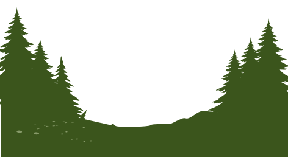
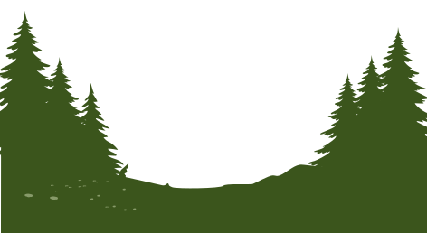

Laura & Dean
 

Laura & Dean
Saturday
Sept 23 2023
3 o'clock in the afternoon
Episcopal Church of the Transfiguration
121 Brooks Camp Rd
Sisters, Oregon
Food, drink and friendship to follow at 4:30 p.m.
FivePine Lodge
1021 E Desperado Trail
Sisters, Oregon
Ahoyhoy!
Things to Consider
Travelling
Sisters, Oregon is a small, artsy town that is about thirty minutes from the well-known travel destination of Bend. Bend is home to the highest per capita concentration of microbreweries, epic hiking trails, horse trails, world-class mountain biking and skiing. Food trucks, art galleries and wineries abound as well.
The closest airport is Redmond (RDM), about 25 minutes away. Laura’s parents live in this town.
Larger airports include Portland (PDX), about three hours or Eugene (EUG), about two hours.
Lodging
There are plenty of lodging options, from bougie to budget:
Sisters, OR
- On site: FivePine Lodge, please call 541-549-5900 and mention Moody/Kang
- A mile away: Best Western Ponderosa, please call 800-528-1902 and mention Dean and Laura’s Wedding
Bend, OR (a thirty minute drive)
- So many options! Check online or on AirBNB for some cool experiences.
Attire
The ceremony is in a church, so shirts and shoes are appreciated! But otherwise, wear what makes you comfortable.
Reception
Our reception is an unstructured one. FivePine Lodge is about half a mile from the church, and we’ll head over as soon as the ceremony finishes. There’s plenty of parking and it’s also a beautiful walk.
Please come enjoy dinner, beer, wine, drinks alcoholic and non, and even a snazzy cake. Children of all ages are welcome throughout.
Gifts
Forget what your mama taught you and please come empty handed. Really! No gifts, please.
We met two years ago in Bahrain while playing a small role in the care of thousands of abandoned dogs in the Middle East. If you like, please spread the love by donating to the grassroots team still on the ground:
- Bahrain’s Happy Tails:
- https://gofund.me/6471c1e8e
Or your local Humane Society